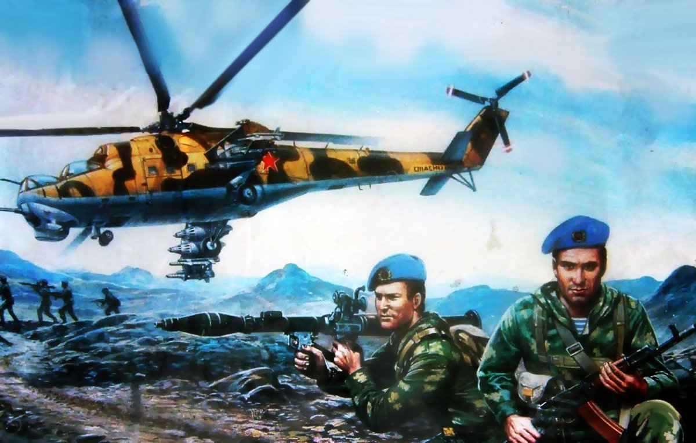
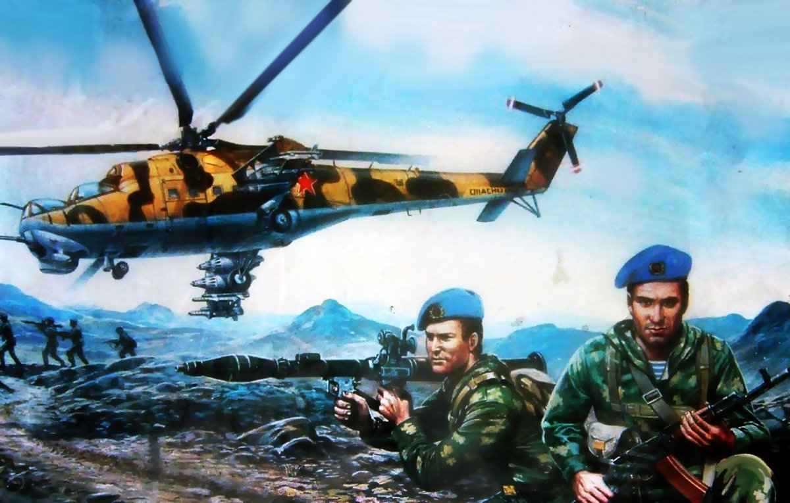

Бабаков Александр Петрович
родился16 января 1967 года в городе Гомеле. Окончил 44 школу в 1983 году. 14 апреля 1986 года был призван в армию, а с 18 октября 1986 года по 19 мая 1988 года служил в Афганистане в воздушно-десантские войска (ВДВ). Был награжден медалью «За отвагу» за усиленное выполнение заданий при оказании интернационального долга в Республике Афганистана.
Самый памятный день: «Когда пересекали воздушную границу СССР и Республикой Афганистан и встреча с родными».
Из воспоминаний Бабакова Александра:
«…15 января 1987 года в день перемирия между правительством Афганистана и вооруженной группировкой душманов мы сопровождали колонну с боеприпасами из Хайратона. Перевал Саланг прошли, остановились на ночь. Ночью колонны из-за опасности не ходят. Через час после расположения в местечки Джабаль-ус-Сирадж начался обстрел. Оказывается к нам подъезжала другая колонна машин «наливников» – это машины, которые везут горючее. Превосходства сил было на стороне душманов, поэтому была вызвана артиллерия. Мы с товарищами развернули стволы ЗУ-23 (зенитные установки) и подавили точки противника. В этот день – день перемирия погибло два советских воина…».